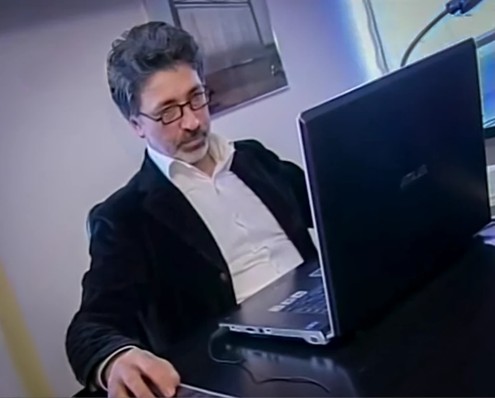

Alessandro: l'anima oltre il padiglione
Un ricordo tra architetture temporanee, sostenibilità e quelle tenerine alla zucca che sapevano di casa.
Note sparse su design, spazio, sostenibilità e didattica.
Scrivo quando ho qualcosa da dire.
Un ricordo tra architetture temporanee, sostenibilità e quelle tenerine alla zucca che sapevano di casa.

Trasformare le idee in realtà attraverso il supporto strategico e la formazione.